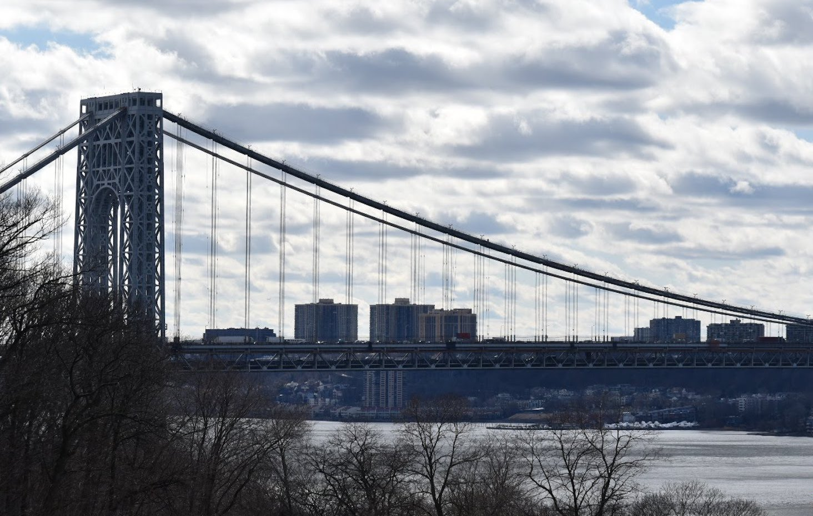
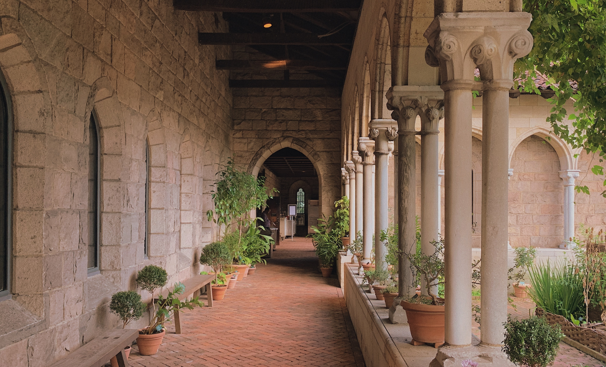

The beautiful Fort Tryon Park is located in the bustling city of New York. Hidden away inside this breathtaking park, is one of The New York City Metropolitan Museums. The MET presents thousands of years of art from around the globe for anyone to enjoy. The Museum lives only at two iconic sites in New York City; Fifth Avenue and The Cloisters. (Of course inside the lovely Fort Tryon Park)   Since its founding in 1870, The Met has always aspired to be more than a treasury of rare and beautiful objects. Every day, art comes alive in the Museum's galleries and through its exhibitions and events, revealing new ideas and unexpected connections across time and across cultures.